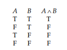

Chapter 1.1: Propositional Connectives: Truth Tables
Truth-functional (adj.): "Combinations in which the truth or falsity of the new sentence is determined by the truth or falsity of its component sentences." - Page 1
Negation: Operation represented by (¬). Changes a True to False and a False to True. Page 1
Truth table: A table showing, for each combination of True or False given to the sentences, gives the output of the operation performed on them. Page 1
Negation truth table:
 Page 1
Page 1
Truth values: True or False in reference to the evaluation of an operation or the value given to a sentence. Note: From here on, T = True and F = False. Page 1
Conjunction: Operation represented by (∧). Page 1
Conjunction truth table:
 Page 1
Conjuncts: Two or more sentences linked together by ∧. Page 1
Disjunction: Operation represented by (∨). Page 2
Disjunction truth table:
Page 2
Disjuncts: Two or more sentences linked together by ∨. Page 2
Conditional: Operation represented by (⇒). May be read as "If A, then B," for sentences A and B. Page 2
Antecedent: Sentence on the left side of ⇒.
Consequent: Sentence on the right side of ⇒.
Conditional truth table:
 Page 2
Page 2
Biconditional: Operation represented by (⇔). May be read as "A if and only if B," for sentences A and B. Page 3
Biconditional truth table:
 Page 3
Page 3
Propositional connectives: ¬, ∧, ∨, ⇒, ⇔. "Any sentence built up by application of these connectives has a truth value that depends on the truth values of the constituent sentences." Page 3
Statement letters: Letters that represent sentences and may take T or F as truth values. Page 3
Statement form: Expression built from statement letters and valid applications of propositional connectives. Page 3-4
-
All statement letters (capital italic letters) and statement letters with numerical subscripts are statement forms.
-
If B and C are statement forms, so are ¬B, (B∧C), (B∨C), (B⇒C) and (B⇔C).
-
Only the expression determined by the above 1. and 2. are statement forms.
Truth function: "For every assignment of truth values T or F to the statement letters that occur in a statement form, there corresponds, by virtue of the truth tables for the propositional connectives, a truth value for the statement form." May be represented accurately as a truth table. Page 4
For n distinct letters in a statement form, there are 2^n possible assignments of truth values and 2^n rows in the truth table. Page 4
Principal connective: Propositional connective "applied last in constructing the form." Page 5
Atomic sentences: Sentences not composed of other sentences. Page 5